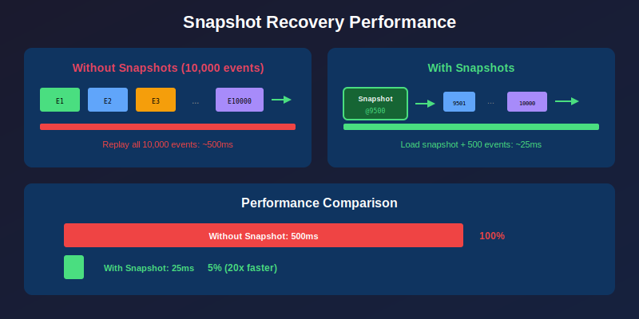

Snapshots in reckon-db
View SourceSnapshots are periodic captures of aggregate state that optimize event replay performance. Instead of replaying thousands of events, you load the latest snapshot and replay only subsequent events.
Why Snapshots?
In event sourcing, current state is derived by replaying all events. Snapshots dramatically improve recovery performance:

When to Use Snapshots
| Scenario | Use Snapshots? |
|---|---|
| Aggregates with < 100 events | Probably not needed |
| Aggregates with 100-1000 events | Consider it |
| Aggregates with > 1000 events | Recommended |
| Frequent aggregate loading | Recommended |
| Long-lived aggregates | Recommended |
| Read-heavy workloads | Recommended |
When NOT to Use Snapshots
- Small aggregates (few events)
- Write-heavy, read-light workloads
- When event replay is fast enough
- Development/testing (adds complexity)
Snapshot API
Saving Snapshots
%% Save a snapshot of aggregate state
ok = reckon_db_snapshots:save(
my_store, %% Store ID
<<"account-123">>, %% Stream ID
150, %% Version (event number this snapshot is at)
AccountState, %% The state to snapshot (any term)
#{ %% Metadata
aggregate_type => account,
created_by => self()
}
).The snapshot stores:
- Stream ID: Which stream this snapshot belongs to
- Version: The event version this snapshot represents
- Data: The serialized aggregate state
- Metadata: Additional information (optional)
- Timestamp: When the snapshot was created
Loading Snapshots
%% Load the latest snapshot
case reckon_db_snapshots:load(my_store, <<"account-123">>) of
{ok, Snapshot} ->
Version = Snapshot#snapshot.version,
State = Snapshot#snapshot.data,
%% Replay events after the snapshot
replay_from(State, Version + 1);
{error, not_found} ->
%% No snapshot, replay from beginning
replay_from(initial_state(), 0)
end.
%% Load snapshot at a specific version
{ok, Snapshot} = reckon_db_snapshots:load_at(my_store, <<"account-123">>, 100).Listing Snapshots
%% List all snapshots for a stream
{ok, Snapshots} = reckon_db_snapshots:list(my_store, <<"account-123">>).
%% Returns list of snapshots sorted by version (newest first)
[
#snapshot{stream_id = <<"account-123">>, version = 150, ...},
#snapshot{stream_id = <<"account-123">>, version = 100, ...},
#snapshot{stream_id = <<"account-123">>, version = 50, ...}
]Deleting Snapshots
%% Delete a specific snapshot
ok = reckon_db_snapshots:delete_at(my_store, <<"account-123">>, 50).
%% Delete old snapshots (keep only recent ones)
{ok, Snapshots} = reckon_db_snapshots:list(my_store, <<"account-123">>),
OldSnapshots = lists:nthtail(3, Snapshots), %% Keep 3 most recent
[reckon_db_snapshots:delete_at(my_store, S#snapshot.stream_id, S#snapshot.version)
|| S <- OldSnapshots].Using Snapshots with Aggregates
Complete Aggregate Pattern
-module(account_aggregate).
-export([load/2, execute/3, save_snapshot_if_needed/3]).
-record(account, {
id,
balance = 0,
status = active,
events_since_snapshot = 0
}).
-define(SNAPSHOT_THRESHOLD, 100). %% Snapshot every 100 events
%% Load aggregate from store
load(StoreId, AccountId) ->
StreamId = <<"account-", AccountId/binary>>,
%% Try to load from snapshot first
{InitialState, StartVersion} = case reckon_db_snapshots:load(StoreId, StreamId) of
{ok, Snapshot} ->
{Snapshot#snapshot.data, Snapshot#snapshot.version + 1};
{error, not_found} ->
{#account{id = AccountId}, 0}
end,
%% Replay events after snapshot
case reckon_db_streams:read(StoreId, StreamId, StartVersion, 10000, forward) of
{ok, Events} ->
FinalState = lists:foldl(fun apply_event/2, InitialState, Events),
EventCount = length(Events),
{ok, FinalState#account{events_since_snapshot = EventCount}};
{error, {stream_not_found, _}} when StartVersion =:= 0 ->
%% New aggregate
{ok, InitialState};
{error, Reason} ->
{error, Reason}
end.
%% Execute command and persist events
execute(StoreId, AccountId, Command) ->
StreamId = <<"account-", AccountId/binary>>,
%% Load current state
{ok, Account} = load(StoreId, AccountId),
%% Execute command
case handle_command(Command, Account) of
{ok, Events} ->
%% Get current version
CurrentVersion = reckon_db_streams:get_version(StoreId, StreamId),
%% Append events
{ok, NewVersion} = reckon_db_streams:append(
StoreId,
StreamId,
CurrentVersion,
Events
),
%% Apply events to get new state
NewState = lists:foldl(fun apply_event/2, Account, Events),
%% Maybe save snapshot
EventsSinceSnapshot = Account#account.events_since_snapshot + length(Events),
save_snapshot_if_needed(StoreId, StreamId, NewState, NewVersion, EventsSinceSnapshot),
{ok, NewVersion, NewState};
{error, Reason} ->
{error, Reason}
end.
%% Save snapshot if threshold reached
save_snapshot_if_needed(StoreId, StreamId, State, Version, EventsSinceSnapshot)
when EventsSinceSnapshot >= ?SNAPSHOT_THRESHOLD ->
%% Save snapshot
ok = reckon_db_snapshots:save(StoreId, StreamId, Version, State, #{}),
logger:info("Saved snapshot for ~s at version ~p", [StreamId, Version]);
save_snapshot_if_needed(_StoreId, _StreamId, _State, _Version, _EventsSinceSnapshot) ->
%% Not enough events, skip snapshot
ok.
%% Command handlers
handle_command({deposit, Amount}, #account{status = active} = Account) when Amount > 0 ->
{ok, [#{
event_type => <<"MoneyDeposited">>,
data => #{amount => Amount, balance_after => Account#account.balance + Amount}
}]};
handle_command({deposit, _Amount}, #account{status = frozen}) ->
{error, account_frozen};
handle_command({withdraw, Amount}, #account{status = active, balance = Balance})
when Amount > 0, Amount =< Balance ->
{ok, [#{
event_type => <<"MoneyWithdrawn">>,
data => #{amount => Amount, balance_after => Balance - Amount}
}]};
handle_command({withdraw, Amount}, #account{balance = Balance}) when Amount > Balance ->
{error, insufficient_funds}.
%% Event application
apply_event(#{event_type := <<"MoneyDeposited">>} = Event, Account) ->
Amount = maps:get(amount, maps:get(data, Event)),
Account#account{balance = Account#account.balance + Amount};
apply_event(#{event_type := <<"MoneyWithdrawn">>} = Event, Account) ->
Amount = maps:get(amount, maps:get(data, Event)),
Account#account{balance = Account#account.balance - Amount};
apply_event(#{event_type := <<"AccountFrozen">>}, Account) ->
Account#account{status = frozen}.Using reckon_db_aggregator with Snapshots
The reckon_db_aggregator module provides the aggregate/3 function for snapshot-based aggregation:
%% Load snapshot and replay events manually
StreamId = <<"account-123">>,
%% Try to load snapshot
{Snapshot, StartVersion} = case reckon_db_snapshots:load(my_store, StreamId) of
{ok, S} -> {S, S#snapshot.version + 1};
{error, not_found} -> {undefined, 0}
end,
%% Read events after snapshot
{ok, Events} = reckon_db_streams:read(my_store, StreamId, StartVersion, 10000, forward),
%% Aggregate with snapshot support
FinalState = reckon_db_aggregator:aggregate(Events, Snapshot, #{
initial_state => #account{id = <<"123">>}
}).Snapshot Strategies
Time-Based Snapshotting
Save snapshots at regular time intervals:
-module(snapshot_scheduler).
-behaviour(gen_server).
-define(SNAPSHOT_INTERVAL_MS, 60000). %% Every minute
init(StoreId) ->
timer:send_interval(?SNAPSHOT_INTERVAL_MS, snapshot_check),
{ok, #{store_id => StoreId}}.
handle_info(snapshot_check, #{store_id := StoreId} = State) ->
%% Get active aggregates that need snapshots
ActiveAggregates = get_active_aggregates(),
lists:foreach(fun({StreamId, CurrentState, Version}) ->
%% Check if snapshot is stale
case should_snapshot(StoreId, StreamId, Version) of
true ->
reckon_db_snapshots:save(StoreId, StreamId, Version, CurrentState, #{});
false ->
ok
end
end, ActiveAggregates),
{noreply, State}.
should_snapshot(StoreId, StreamId, CurrentVersion) ->
case reckon_db_snapshots:load(StoreId, StreamId) of
{ok, Snapshot} ->
%% Snapshot if > 100 events since last snapshot
CurrentVersion - Snapshot#snapshot.version > 100;
{error, not_found} ->
%% No snapshot, create one if > 50 events
CurrentVersion > 50
end.Event-Count-Based Snapshotting
Snapshot after N events (shown in aggregate example above):
-define(SNAPSHOT_EVERY_N_EVENTS, 100).
maybe_snapshot(StoreId, StreamId, State, Version, EventsSinceSnapshot) ->
case EventsSinceSnapshot >= ?SNAPSHOT_EVERY_N_EVENTS of
true ->
reckon_db_snapshots:save(StoreId, StreamId, Version, State, #{}),
0; %% Reset counter
false ->
EventsSinceSnapshot
end.On-Demand Snapshotting
Snapshot on specific conditions:
%% Snapshot after significant state changes
handle_event(#{event_type := <<"LargeTransactionProcessed">>} = Event, State) ->
NewState = apply_event(Event, State),
%% Force snapshot after large transactions
reckon_db_snapshots:save(StoreId, StreamId, Version, NewState, #{
reason => large_transaction,
amount => maps:get(amount, maps:get(data, Event))
}),
NewState.Snapshot Storage Considerations
What to Store
Store only the essential state:
%% Good: Minimal, reconstructable state
save_snapshot(State) ->
#{
balance => State#account.balance,
status => State#account.status,
last_transaction_id => State#account.last_transaction_id
}.
%% Bad: Storing derived/cacheable data
save_snapshot(State) ->
#{
balance => State#account.balance,
status => State#account.status,
transaction_history => State#account.history, %% Can be replayed
monthly_totals => State#account.monthly_totals %% Derived data
}.Snapshot Versioning
Handle schema changes in snapshots:
%% Version your snapshot schema
save_snapshot(State) ->
#{
schema_version => 2,
data => #{
balance => State#account.balance,
status => State#account.status,
currency => State#account.currency %% New in v2
}
}.
%% Handle old snapshot formats
load_snapshot(#{schema_version := 1, data := Data}) ->
%% Migrate v1 to current format
#account{
balance = maps:get(balance, Data),
status = maps:get(status, Data),
currency = <<"USD">> %% Default for v1 snapshots
};
load_snapshot(#{schema_version := 2, data := Data}) ->
%% Current version
#account{
balance = maps:get(balance, Data),
status = maps:get(status, Data),
currency = maps:get(currency, Data)
}.Best Practices
1. Keep Snapshots Small
Snapshots should contain minimal state:
%% Calculate snapshot size
SnapshotData = State#account{
%% Exclude non-essential fields
audit_log => [], %% Clear logs
cached_calculations => #{} %% Clear caches
},
Size = byte_size(term_to_binary(SnapshotData)),
case Size > 1000000 of %% > 1MB
true -> logger:warning("Large snapshot: ~p bytes", [Size]);
false -> ok
end.2. Cleanup Old Snapshots
Don't keep unlimited snapshots:
%% Keep only the N most recent snapshots
cleanup_old_snapshots(StoreId, StreamId, KeepCount) ->
{ok, Snapshots} = reckon_db_snapshots:list(StoreId, StreamId),
ToDelete = lists:nthtail(KeepCount, Snapshots),
[reckon_db_snapshots:delete(StoreId, S#snapshot.stream_id, S#snapshot.version)
|| S <- ToDelete].3. Test Snapshot/Replay Consistency
Verify snapshots produce correct state:
%% Property test: snapshot + replay = full replay
prop_snapshot_consistency() ->
?FORALL(Events, non_empty(list(event())),
begin
StreamId = unique_stream_id(),
%% Write events
{ok, FinalVersion} = write_events(StoreId, StreamId, Events),
%% Full replay
{ok, AllEvents} = reckon_db_streams:read(StoreId, StreamId, 0, 10000, forward),
FullReplayState = lists:foldl(fun apply_event/2, initial_state(), AllEvents),
%% Save snapshot midway
MidVersion = FinalVersion div 2,
{ok, MidEvents} = reckon_db_streams:read(StoreId, StreamId, 0, MidVersion, forward),
MidState = lists:foldl(fun apply_event/2, initial_state(), MidEvents),
reckon_db_snapshots:save(StoreId, StreamId, MidVersion, MidState, #{}),
%% Snapshot + replay
{ok, Snapshot} = reckon_db_snapshots:load(StoreId, StreamId),
{ok, RemainingEvents} = reckon_db_streams:read(StoreId, StreamId, MidVersion + 1, 10000, forward),
SnapshotReplayState = lists:foldl(fun apply_event/2, Snapshot#snapshot.data, RemainingEvents),
%% States must match
FullReplayState =:= SnapshotReplayState
end).4. Monitor Snapshot Performance
Track snapshot metrics:
save_snapshot_with_metrics(StoreId, StreamId, Version, State) ->
StartTime = erlang:monotonic_time(microsecond),
ok = reckon_db_snapshots:save(StoreId, StreamId, Version, State, #{}),
Duration = erlang:monotonic_time(microsecond) - StartTime,
Size = byte_size(term_to_binary(State)),
telemetry:execute(
[reckon_db, snapshot, created],
#{duration => Duration, size_bytes => Size},
#{store_id => StoreId, stream_id => StreamId, version => Version}
).Further Reading
- Event Sourcing Guide - Foundation concepts
- CQRS Guide - Read model projections
- Subscriptions Guide - Event delivery
References
- Vaughn Vernon: "Implementing Domain-Driven Design" (Chapter 10: Aggregates)
- Greg Young: Snapshot Strategies
- Event Store: Projections and Snapshots